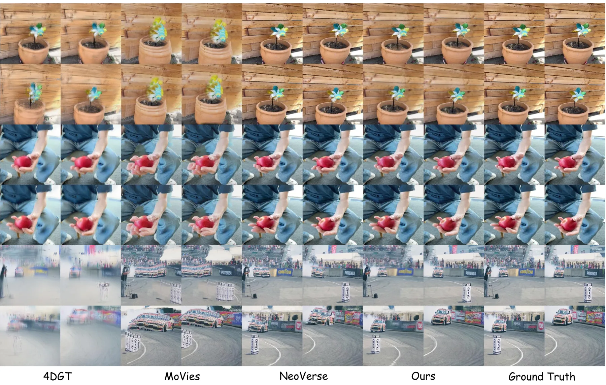
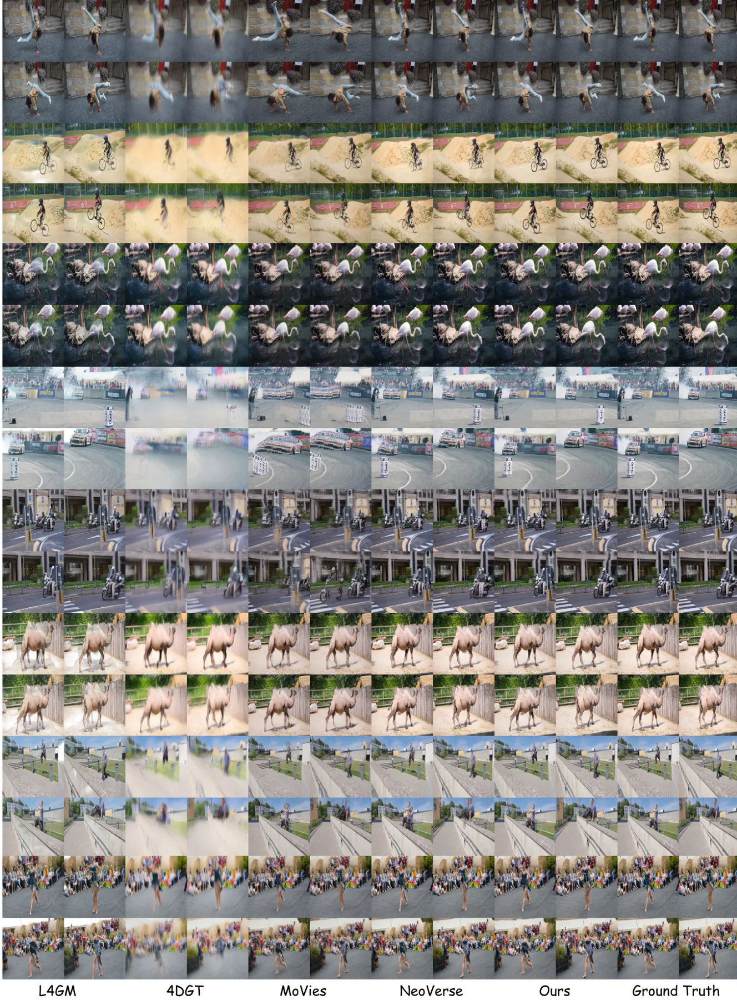

AEON：统一视频世界模型与 3D 世界模型
AEON: Unifying Video and 3D World Models
AEON 把“生成”和“表示”分开：生成仍发生在视频 VAE 潜空间，表示换成 4DGS，中间靠双路域适配器（Conv + Perceiver Bridge）和蒸馏衔接。4D 生成 VBench I2V 0.913、Aesthetic 0.531（Lyra 0.865/0.459）；视频→4D 在 Dycheck 14.487（NeoVerse 14.269）、DaVis 24.661（23.929），但 DaVis 上仍略低于它的 teacher 4DRM（24.886）。
I2V Subject
Aesthetic Quality
DaVis PSNR
Dycheck PSNR
作者、单位与技术谱系 · Research context
作者与单位
研究脉络
- 视频世界模型（Sora / Wan 2.1、2.2）方法基座关系：提供文本/图像条件化的视频潜空间与外观先验；AEON 不改主干、只把输出侧换成 4DGS。[论文摘要与 §4.1]
- 3D 世界模型（Marble 一类）问题前作关系：几何一致但静态、观感差，是本文要补的另一半；AEON 的 4DGS 输出即针对这一点。[论文 §1 与 Table 1]
- 4D 重建（4DRM，本文 Stage 1）本篇推进关系：自训的 4D 重建模型既是 Stage 1 产物，也是 Stage 2/3 的几何老师，构成方法内部的“上游”。[论文 §3 与 Table 3]
合作网络
- 清华大学软件学院（四人同单位）Weiqi Zhang → Yu-Shen Liu关系：共同署名（同单位）[arXiv HTML 作者块]
- AEON（学生 4DRM） → 4DRM（teacher）AEON student → AEON teacher 4DRM关系：技术依赖（蒸馏）[论文 §3 与 Table 5]
- AEON → Wan 2.1 / Wan 2.2AEON → Wan 2.1 / Wan 2.2 视频主干关系：技术依赖（潜空间主干）[论文 §4.1]
作者与单位取自 arXiv HTML 作者块，通讯标记为 †；技术依赖（蒸馏、视频主干）来自方法章节与消融。未推断导师/师生关系；NeurIPS 2026 接收信息来自 arXiv comment 字段。
方法本质拆解 · What actually changed
是不是微调？
是从头训练一套三阶段流水线：Stage 1 训 4DRM（20 epoch），Stage 2 冻结老师、训适配器与学生（30 epoch），Stage 3 端到端渲染微调（10 epoch）。视频生成主干（Wan 2.1/2.2）作为潜空间来源被复用，但几何侧权重是本文自己训的。
加了什么先验与约束？
约束有两层：表示层用 4DGS 的显式几何（位置、尺度、朝向、速度、duration）替代像素；训练层用老师 4DRM 的蒸馏特征对齐约束适配器的输出。Stage 3 再叠加渲染损失，把“潜空间对齐”收紧到“像素一致”。
推理时到底做了什么？
文本/图像条件 → 视频主干生成潜变量 → 域适配器映射 → 学生 4DRM 解码出 4DGS → 任意相机轨迹直接光栅化。没有逐场景优化、不需要输入位姿或深度；新视角是几何重投影而非重新生成，这是它视角一致性的来源。
方法本质是什么？
本质是把“视频生成的外观先验”和“4D 基元的几何一致性”用一个可学习的潜空间桥接起来，让生成结果落在显式几何上。它改变的是世界表示的形式，不是估计精度；因此视觉指标领先，而几何精度受 VAE 瓶颈与蒸馏损失限制。
输入文本或图像条件，在视频潜空间生成后经域适配器接到 4DGS 解码器，用显式 4D 基元替代像素输出，直接效果是新轨迹渲染几何一致、外观仍保留生成先验。

结论与问题Conclusion & Motivation
核心结论
AEON 的核心判断是：世界模型的瓶颈不是“生成得好不好看”，而是“用什么表示世界”。它把生成留在视频潜空间（借用 Wan 2.1/2.2 的外观先验），但把输出换成 4DGS，于是渲染新轨迹是几何光栅化而不是再生成一遍。4D 生成上 I2V_Subject 0.913、Aesthetic 0.531，均高于 Lyra（0.865/0.459）；视频→4D 在 DaVis 24.661 dB（NeoVerse 23.929），但同表 teacher 4DRM 是 24.886 dB——学生模型没有超过老师，这是理解该方法定位的关键数字。
动机与问题
两条路线各有硬伤：视频生成模型（Sora 一类）外观真实，但跨视角 3D 不一致，无法作为可查询的空间表示；3D 生成模型（Marble 一类）几何一致，但往往静态、观感差。论文用一张表把这些差异拆成可比较的维度，主张需要一个“在视频潜空间里生成、但输出显式 4D 基元”的统一表示，才能在保持外观先验的同时支持自由视角探索。
方法Method
方法总览
三阶段。Stage 1：在带位姿与深度的视频上训练 4DRM（同时预测 4DGS 与相机位姿），作为几何老师。Stage 2：冻结老师，训练双路域适配器（卷积分支 + Perceiver Bridge）把视频 VAE latent 映射到 4DRM 的潜空间，同时训学生 4DRM；这一阶段只需要原始 RGB，靠蒸馏拿监督。Stage 3：用端到端渲染损失再微调 10 个 epoch，让适配器与学生在像素层面自洽。4DGS 本身带速度与 duration（时间维不透明度演化），这是它能表达“瞬时动态”的关键。
关键技术细节
训练语料分两层：Stage 1 用 DynamicReplica、SAILVOS3D、Spring、TartanAir、PointOdyssey、OmniWorld 六个带 GT 位姿/深度的数据集（按表 6 重采样），Stage 2 额外加入 Panda-70M 扩外观分布；全部实验在 16 张 H200 上完成，Stage1 20 epoch、Stage2 30 epoch、Stage3 10 epoch。蒸馏的 feature alignment 权重按余弦从 1.0 衰减到 0，Stage 3 的 distillation 正则从 0.5 线性衰减到 0。推理时不需要相机位姿也不需要深度——这是它与 4DGT/MoVies（需要外部位姿）、StreamSplat（需要 DA V2 深度）的差别。

实验Experiments
实验设置
三类评测：①4D 生成，30 个 image-text prompt 场景，沿同一组预设相机轨迹渲染，用 VBench 的 I2V Subject、Subject Consistency、Motion Smoothness、Aesthetic Quality 打分，对照 4DNex 与 Lyra；②视频→4D 重建，Dycheck 与 DaVis，指标 PSNR/SSIM/LPIPS，对照 L4GM、4DGT、MoVies、NeoVerse、StreamSplat，并附 teacher 4DRM 作为上界；③新轨迹渲染，30 条训练未见的 in-the-wild 视频，对照 TrajectoryCrafter、RecamMaster、NeoVerse，用六项 VBench 指标。
实验数字与比较
4D 生成：AEON(Wan 2.2) I2V 0.913 / 主体一致性 0.875 / 运动平滑 0.980 / 美学 0.531，对 Lyra 0.865/0.864/0.974/0.459、4DNex 0.796/0.790/0.968/0.342。视频→4D：Dycheck PSNR 14.487 对 NeoVerse 14.269、StreamSplat 11.876、L4GM 8.673；DaVis 24.661 对 NeoVerse 23.929、StreamSplat 23.748。新轨迹：Aesthetic 69.02 对 TrajectoryCrafter 64.81、Imag Quality 58.65 对 58.53，但 Temporal Flicker 96.69 低于 RecamMaster 的 97.64；运动平滑 98.11 也低于 TrajectoryCrafter 的 98.79。
消融/失败边界
Table 5 三个变体差异极大：把双路适配器换成单层 Conv3D，DaVis PSNR 从 24.661 掉到 12.813（−11.8 dB），Dycheck 也从 14.487 掉到 12.086；去掉蒸馏只用渲染监督，DaVis 16.718（−7.9 dB）；去掉 duration（所有基元整段可见），DaVis 22.057（−2.6 dB），说明时间不透明度演化对瞬时动态很关键。附录另报：只用卷积分支或只用 Perceiver 分支，DaVis 都掉到 12.8–15.4 dB；去掉 Stage 3 掉 1.7 dB。失败边界很清楚：DaVis 上 student 24.661 < teacher 24.886，Dycheck 绝对值只有 14.5 dB，几何精度不适合当重建基线。
局限与迁移Limitations & Transfer
局限与待核验
作者承认 Stage 1 依赖带位姿与深度的标注数据，后续阶段才摆脱；但论文没有系统讨论“生成模型的先验会不会污染几何”这一风险。我们待核验：视频 VAE latent 瓶颈对细节的损失有多大（DaVis 上 student 不如 teacher 可能正是它）；duration 参数在长时遮挡与重现物体上的行为；新轨迹评测用的 30 条视频规模偏小、且是作者自采，指标差异（如 96.69 vs 97.64）是否显著未给置信区间。
与你研究路线的关系
不要把它当状态估计用：它的位姿来自自带相机头，精度与 SLAM 不在一个量级，Dycheck 14.5 dB 也说明几何只是“可渲染”而非“可测量”。可迁移的是两点：①4DGS 的 velocity + duration 参数化，适合表达“只在一段时间存在”的动态物体（行人、车辆），可作为我们动态地图层的表示候选；②蒸馏式域适配（冻结老师 + 只训 adapter）在小数据下换传感器的思路，和我们“换相机不重训主干”的诉求一致。下一步实验：若要用它补全动态区域，先在自有车载序列上量“与 LiDAR 的一致性”而不是 PSNR；不达标就不进入地图主链路。

